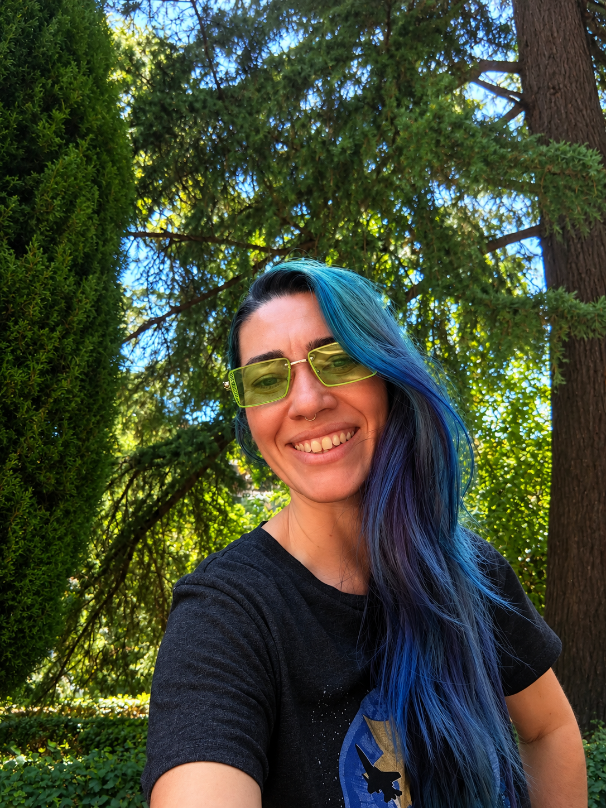

Arte-educadora • Artista • Pós-graduada em Arteterapia
Há mais de duas décadas trabalho com arte, educação, processos criativos e expressão humana. Ao longo desse caminho, acompanhei crianças, jovens e adultos em experiências onde a criação não era apenas resultado bonito, mas linguagem, presença, elaboração e cuidado.
Criei o Atelier da Escuta para acolher mulheres criativas, professoras, artistas, artesãs e mulheres em momentos de transição que sentem necessidade de se escutar com mais calma, organizar emoções e reencontrar sua própria voz através da arte.
Meu trabalho une arteterapia, escuta sensível e expressão criativa. Você não precisa saber desenhar, pintar ou produzir algo bonito. Aqui, a arte não é desempenho. É caminho.
Os atendimentos acontecem online, para mulheres do Brasil e de Portugal, com respeito, sigilo, acolhimento e cuidado com o ritmo de cada pessoa.
Mais do que uma técnica, meu trabalho é um encontro: um espaço onde a palavra, o silêncio, o corpo e a criação podem existir com delicadeza.
AGENDAR CONVERSA